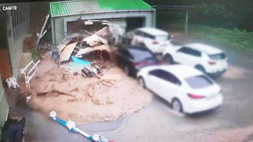

실시간 산사태 상황
| 지역 | 상태 | 알림 |
|---|---|---|
| 불국사 | 위험 | 산사태 발생 가능성 높음 |
| 경주시 남부 | 주의 | 강우로 인한 취약 지역 |
| 감포읍 | 정상 | 문제 없음 |
산사태 예측 가능 지역
-
2023년 6월 22일
경주시 북부 지역 산사태 위험
사유: 연속 강우로 인한 토양 침식
-
2023년 6월 23일
감포읍 해안 지역 산사태 주의
사유: 지반 약화
-
2023년 6월 24일
불국사 근처 산사태 가능성
사유: 비탈면 불안정